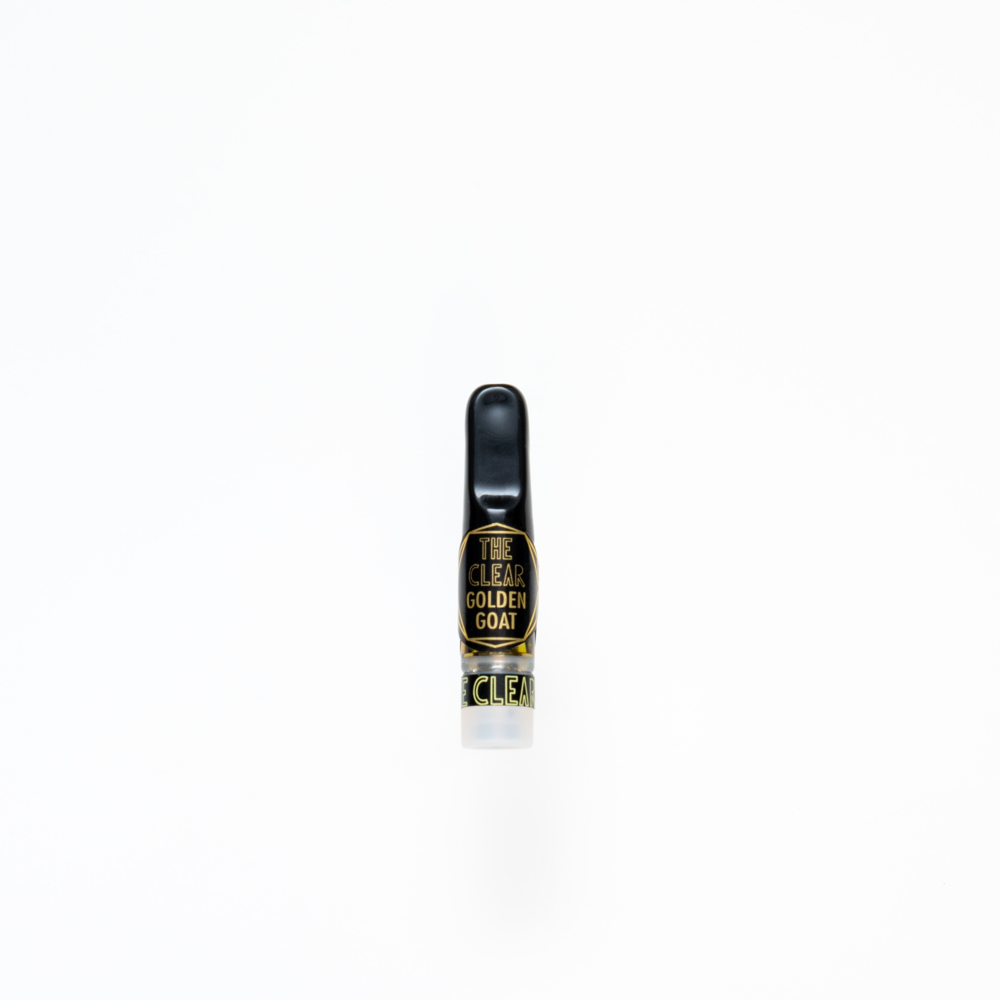

Cannabis Products
The Many Types of Cannabis Products
From flower and edibles to vapes and concentrates, there are many different types of cannabis products that are legally available throughout America. However, the types of products you will find in dispensaries varies from state to state. For example, some medical use only states (like PA) prohibit the sale of edibles and pre-rolls because these products are considered "too recreational". Meanwhile, adult-use states like CA, WA, IL, and many others do allow for the sale of edibles and pre-rolls.
Below, you will find images of the various types of medical cannabis products sold throughout PA.
Flower

Source: Unsplash
Vape Cartridges
Source: Unsplash
Concentrates
Topicals
Cannabinoids & Terpenes Chart
| Terpenes | Effects | Found In | Cannabinoids | |||
|---|---|---|---|---|---|---|
| Myrcene | Can help with behavioral and pain symptoms associated with opiod use disorder. | Thyme, Hops, Lemongrass, and Citrus | THC/A | CBCV | ||